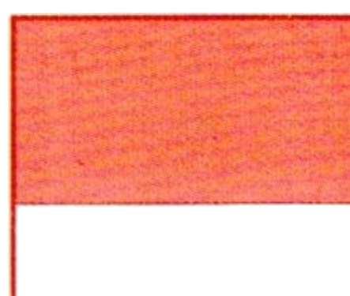
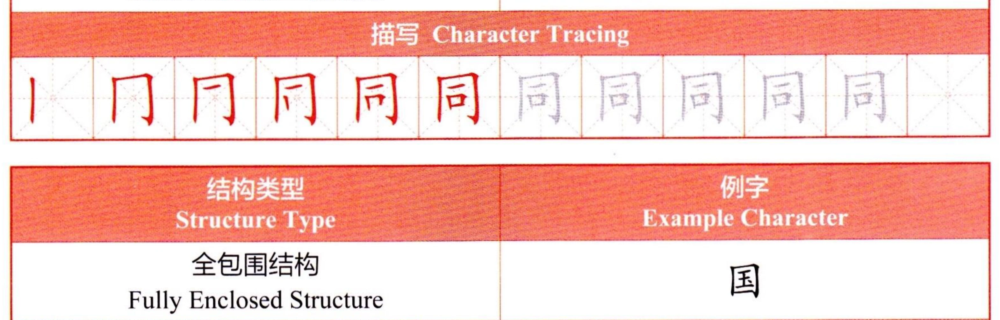
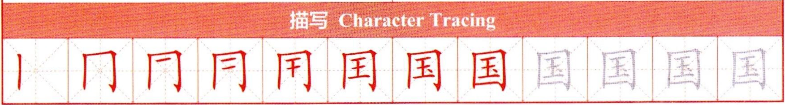
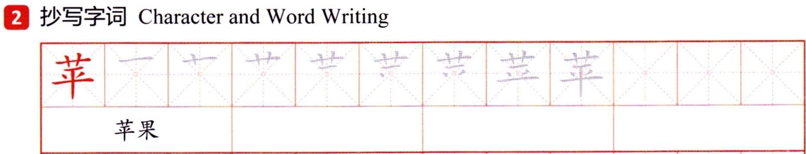
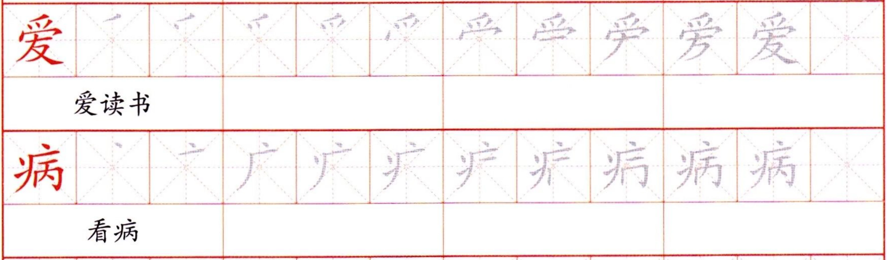
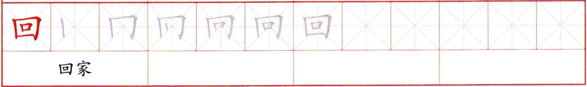

结构类型 Structure TypeStructure TypeТип структуры
例字 Example CharacterExample CharacterПример иероглифа
半包围结构 Semi-Enclosed StructureSemi-Enclosed StructureПолуокружающая структура
同
描写 Character TracingCharacter TracingПрописи иероглифа

结构类型 Structure TypeStructure TypeТип структуры
例字 Example CharacterExample CharacterПример иероглифа
全包围结构 Fully Enclosed StructureFully Enclosed StructureПолностью окружающая структура
描写 Character TracingCharacter TracingПрописи иероглифа

②抄写字词Character and Word WritingНаписание иероглифов и слов

苹果appleяблоко

爱读书love to readлюбить читать

看病see a doctorпосетить врача
回家go homeидти домой
104